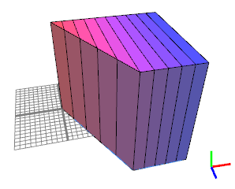

CGA Shape Reference
material.color shape attribute
Synopsis
float material.color.{r|g|b}
string material.color.rgb
The material.color shape attribute controls the diffuse color).
Related
Examples
Rainbow building
|  |
Lot-->
extrude(20)
set(material.color.g, 0)
split(x) {
2 : set(material.color.r, split.index/split.total)
set(material.color.b, 1.0 - split.index/split.total)
X
}*
The split index is used to generate position dependent colors. |
Copyright ©2008-2017 Esri R&D Center Zurich. All rights reserved.